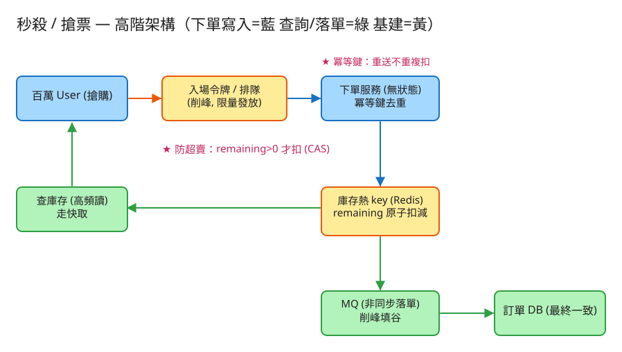

C 一致性/交易 建議 45 分鐘 Design a Flash Sale / Ticketing System
| 指標 | 假設 | 推算 |
|---|---|---|
| 湧入人數 | 熱門演唱會 | 瞬間 100 萬人搶 1 萬張票 |
| 峰值 QPS | 開賣 10 秒內集中 | ~10 萬+ 下單 QPS（讀庫存更高） |
| 有效寫入 | = 庫存量 | 最終只有 1 萬筆成功扣減，其餘全是「沒搶到」 |
| 熱點 | 同一商品庫存 | 單一 key 寫熱點，是整題的核心瓶頸 |
| 無效流量 | 99% 的人搶不到 | 關鍵是盡早擋掉注定失敗的請求，別打到 DB |
# 1) 領入場令牌（削峰第一關，限量發放）
POST /api/v1/sales/{id}/token
Body: { "user": "u123" }
→ 200 { "token": "tk_xxx" } # 拿到才有資格下單
→ 429 { "error": "queued" } # 令牌已發完 → 排隊/稍後再試
# 2) 下單扣庫存（帶冪等鍵，核心關鍵路徑）
POST /api/v1/sales/{id}/buy
Header: Idempotency-Key: <uuid>
Body: { "user": "u123", "token": "tk_xxx", "qty": 1 }
→ 200 { "order_id": "...", "status": "ok" } # 搶到
→ 409 { "error": "sold_out" } # 賣完
→ 409 { "error": "limit_exceeded" } # 超過每人限購
→ 200 (同 order_id) # 冪等：重送回原訂單，不重扣
# 3) 查庫存（高頻讀，走快取）
GET /api/v1/sales/{id}/stock → { "remaining": 42 }
# 4) 一鍵壓測模擬（demo 用）
POST /api/v1/sales/{id}/simulate
Body: { "users": 1000, "stock": 100 } → 售出/拒絕統計 + 無超賣驗證sales（商品/場次）
sale_id PK
name
stock_total INT -- 初始庫存
per_user_limit INT -- 每人限購
starts_at TIMESTAMP
stock（庫存熱 key；真實系統放 Redis）
sale_id -> remaining INT -- 原子扣減的對象（DECR / Lua / UPDATE WHERE）
orders（成功落單）
order_id PK
sale_id, user, qty, created_at
idempotency（冪等去重表）
idem_key PK -- 同鍵重送直接回原結果
sale_id, user, order_id, result
user_purchased（每人已購計數，做限購）
(sale_id, user) -> qty
tokens（入場令牌池）
sale_id -> issued / capacity -- 限量發放，削峰Idempotency-Key 當唯一鍵：第一次成功就把 (key→order) 記下，之後同鍵一律回原訂單。

✏️ 用 Excalidraw 開啟編輯（diagram.excalidraw） 百萬 User
│ （CDN 擋靜態 + 前端限流 + 等待頁）
▼
[入場令牌 / 排隊削峰] ← 限量發 token，多數人被擋在這裡（黃）
│ 通過者
▼
下單服務（無狀態，可水平擴展）
│ 帶 Idempotency-Key（冪等去重）
▼
[原子條件扣減 remaining>0 才扣]（藍）──▶ 庫存熱 key（Redis，黃）
│ 扣減成功
▼
非同步落單：MQ ──▶ 訂單 DB（綠，最終一致）DECR/Lua 或 DB UPDATE ... WHERE stock>0，保證不超賣。讀 remaining → if>0 → remaining-1 → 寫回。並發下兩個請求同時讀到 1，都判斷可賣 → 超賣。這是經典的 read-modify-write race。DECR 是原子的；但要防扣成負數，用 Lua 腳本把「判斷>0 + 扣減」包成單一原子操作。UPDATE stock SET remaining=remaining-1 WHERE sale_id=? AND remaining>0，看 affected_rows：1=搶到，0=賣完。資料庫的行鎖保證原子，天然防超賣。flock 把「讀-改-寫」包成臨界區（CAS：只有 remaining>0 才扣），語意等同上面兩者。下單入口先查冪等表：命中 → 直接回原結果（不再扣）；未命中 → 扣減成功後把 (key→order) 寫入。 讓「重試/重送」天然安全，這也是金流系統的通用模式。
進入結帳但未付款的庫存先預扣並設 TTL；逾時未付款自動釋放回庫存，避免有人占著不買。
每人已購計數 + 每人限購 N；搭配實名、裝置指紋、風控規則擋機器人。限購檢查也要在臨界區內，避免並發繞過。
| 瓶頸 | 問題 | 對策 |
|---|---|---|
| 單一庫存熱 key | 所有扣減打同一 key，序列化成瓶頸 | 庫存分桶 sharding：1000 張拆 10 桶各 100，請求雜湊到桶，桶內原子扣；賣完跨桶借 |
| 讀庫存爆 | 大家狂刷「還剩幾張」 | 快取 + 近似值；甚至只回「有/無」布林 |
| 寫尖峰 | 瞬間湧入打垮 DB | MQ 削峰填谷，扣減成功後非同步落單 |
| 無效流量 | 99% 注定失敗仍打後端 | 令牌/排隊盡早擋；賣完後直接回快取的 sold_out |
| 熱點實例 | Redis 單分片熱 | 分桶後 key 分散到多分片；或用本地快取扛讀 |
本題 demo 著重於秒殺的真實核心邏輯（防超賣 + 冪等 + 令牌削峰），可實際用 PHP 內建伺服器跑起來：
src/FlashSale.php 核心：原子條件扣減（flock 包讀-改-寫，只有 remaining>0 才扣）、冪等鍵去重、每人限購、入場令牌池。public/index.php 路由：領令牌 / 下單 / 查庫存 / 一鍵壓測模擬，並附互動測試頁。data/ 執行期狀態（庫存、訂單、冪等記錄、令牌、每人已購），已 gitignore。# 啟動
cd demo
php -S localhost:8028 -t public
# 瀏覽器開 http://localhost:8028
# 設庫存 → 一鍵模擬 1000 人搶 100 張 → 看售出恰為 100（不超賣）
# 同 user 帶相同 idem_key 重送 → 回原訂單不重複扣flock 檔案鎖把「讀-改-寫」包成臨界區，模擬 Redis 原子操作 / DB 行鎖的角色——
這是單機教學版（非真正的分散式 Redis Lua / 叢集）。但防超賣（CAS 條件扣減）、冪等去重、每人限購、令牌削峰的邏輯都是真實可執行的：
模擬高並發搶購後，售出數恰等於庫存、不多不少，同 user 同 idem_key 重送不重複扣。